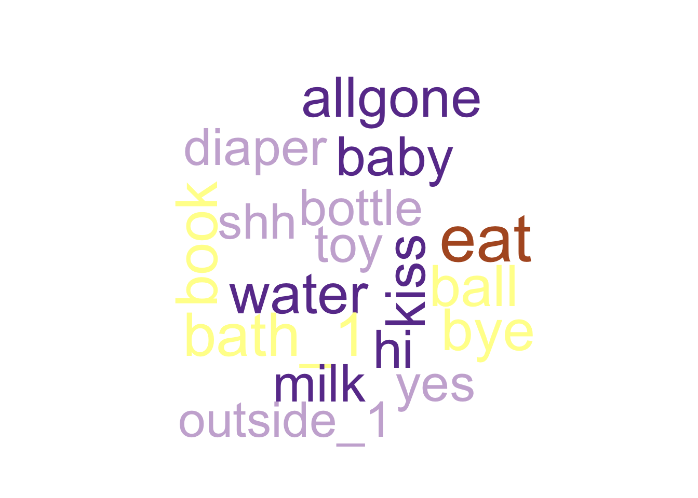
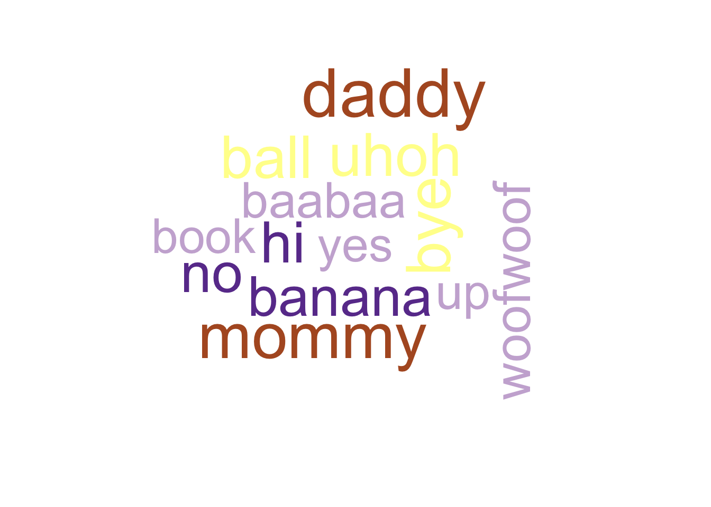
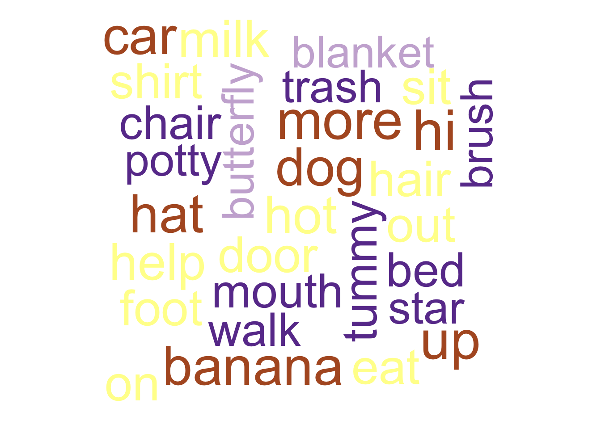
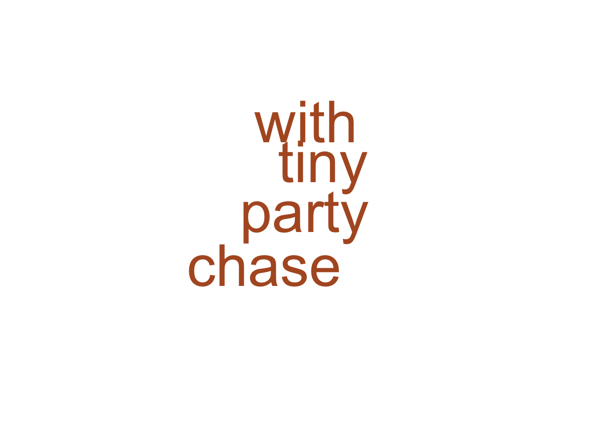

Language visualizations
if (!('home_visit_df' %in% ls())) {
targets::tar_load(home_visit_df, store="../_targets")
}
library(wordcloud)## Loading required package: RColorBrewer
library(RColorBrewer)Language exposure
df <- home_visit_df |>
dplyr::mutate(language_child = stringr::str_replace_all(language_child, " ", "_"))
xtabs(formula = ~ child_sex + language_child, data = df)## language_child
## child_sex english english_spanish
## female 201 40
## male 178 60MB-CDI
12-mo-old English speakers
eng_12 <-
readr::read_csv(
"../data/csv/home_visit/agg/mcdi_english_12_combined.csv",
col_types = readr::cols(.default = 'c'),
show_col_types = FALSE
)There are \(n=\) 138 participant records.
eng_12_long <- eng_12 |>
tidyr::pivot_longer(cols = !(play_id | site_id | subject_number),
names_to = "word",
values_to = "understands_or_says")
#xtabs(~ word + understands_or_says, eng_12_long)
word_ct <- eng_12_long |>
dplyr::filter(!is.na(understands_or_says)) |>
dplyr::filter(understands_or_says == "understands") |>
dplyr::count(word, sort = TRUE)
quant_25 <- round(n_12_eng*.25, 0)
# rcb_color_paired <- RColorBrewer::brewer.pal(12, 'Paired')
# wordcloud::wordcloud(words = word_ct$word, freq = word_ct$n, min.freq = quant_25, colors = rcb_color_paired)
mcdi_viz_wordcloud(word_ct, n_participants = dim(eng_12)[1], quantile = .40)
18-mo-old English speakers
eng_18 <-
readr::read_csv(
"../data/csv/home_visit/agg/mcdi_english_18_combined.csv",
col_types = readr::cols(.default = 'c'),
show_col_types = FALSE
)There are \(n=\) 123 participant records.
word_ct <- eng_18 |>
tidyr::pivot_longer(cols = !(play_id | site_id | subject_number),
names_to = "word",
values_to = "says") |>
dplyr::filter(!is.na(says)) |>
dplyr::filter(says == TRUE) |>
dplyr::count(word, sort = TRUE)
quant_25 <- round(n_18_eng*.25, 0)
#wordcloud::wordcloud(words = word_ct$word, freq = word_ct$n, min.freq = quant_25, colors = rcb_color_paired)
mcdi_viz_wordcloud(word_ct, n_participants = dim(eng_18)[1], quantile = .50)
24-mo-old English speakers
eng_24 <-
readr::read_csv(
"../data/csv/home_visit/agg/mcdi_english_24_combined.csv",
col_types = readr::cols(.default = 'c'),
show_col_types = FALSE
)There are \(n=\) 109 participant records.
word_ct <- eng_24 |>
tidyr::pivot_longer(cols = !(play_id | site_id | subject_number),
names_to = "word",
values_to = "says") |>
dplyr::filter(!is.na(says)) |>
dplyr::filter(says == TRUE) |>
dplyr::count(word, sort = TRUE)
mcdi_viz_wordcloud(word_ct, n_participants = dim(eng_24)[1], quantile = .60)## Warning in wordcloud::wordcloud(words = wd_ct$word, freq =
## wd_ct$n, min.freq = my_thresh, : bye could not be fit on
## page. It will not be plotted.## Warning in wordcloud::wordcloud(words = wd_ct$word, freq =
## wd_ct$n, min.freq = my_thresh, : shoe could not be fit on
## page. It will not be plotted.## Warning in wordcloud::wordcloud(words = wd_ct$word, freq =
## wd_ct$n, min.freq = my_thresh, : baabaa could not be fit on
## page. It will not be plotted.## Warning in wordcloud::wordcloud(words = wd_ct$word, freq =
## wd_ct$n, min.freq = my_thresh, : cookie could not be fit on
## page. It will not be plotted.## Warning in wordcloud::wordcloud(words = wd_ct$word, freq =
## wd_ct$n, min.freq = my_thresh, : thankyou could not be fit
## on page. It will not be plotted.## Warning in wordcloud::wordcloud(words = wd_ct$word, freq =
## wd_ct$n, min.freq = my_thresh, : choochoo could not be fit
## on page. It will not be plotted.## Warning in wordcloud::wordcloud(words = wd_ct$word, freq =
## wd_ct$n, min.freq = my_thresh, : cat could not be fit on
## page. It will not be plotted.## Warning in wordcloud::wordcloud(words = wd_ct$word, freq =
## wd_ct$n, min.freq = my_thresh, : yumyum could not be fit on
## page. It will not be plotted.## Warning in wordcloud::wordcloud(words = wd_ct$word, freq =
## wd_ct$n, min.freq = my_thresh, : frog could not be fit on
## page. It will not be plotted.## Warning in wordcloud::wordcloud(words = wd_ct$word, freq =
## wd_ct$n, min.freq = my_thresh, : rain_2 could not be fit on
## page. It will not be plotted.## Warning in wordcloud::wordcloud(words = wd_ct$word, freq =
## wd_ct$n, min.freq = my_thresh, : butterfly could not be fit
## on page. It will not be plotted.## Warning in wordcloud::wordcloud(words = wd_ct$word, freq =
## wd_ct$n, min.freq = my_thresh, : duck could not be fit on
## page. It will not be plotted.## Warning in wordcloud::wordcloud(words = wd_ct$word, freq =
## wd_ct$n, min.freq = my_thresh, : spoon could not be fit on
## page. It will not be plotted.## Warning in wordcloud::wordcloud(words = wd_ct$word, freq =
## wd_ct$n, min.freq = my_thresh, : cup could not be fit on
## page. It will not be plotted.## Warning in wordcloud::wordcloud(words = wd_ct$word, freq =
## wd_ct$n, min.freq = my_thresh, : hair could not be fit on
## page. It will not be plotted.## Warning in wordcloud::wordcloud(words = wd_ct$word, freq =
## wd_ct$n, min.freq = my_thresh, : sun could not be fit on
## page. It will not be plotted.## Warning in wordcloud::wordcloud(words = wd_ct$word, freq =
## wd_ct$n, min.freq = my_thresh, : shirt could not be fit on
## page. It will not be plotted.## Warning in wordcloud::wordcloud(words = wd_ct$word, freq =
## wd_ct$n, min.freq = my_thresh, : hand could not be fit on
## page. It will not be plotted.## Warning in wordcloud::wordcloud(words = wd_ct$word, freq =
## wd_ct$n, min.freq = my_thresh, : hot could not be fit on
## page. It will not be plotted.## Warning in wordcloud::wordcloud(words = wd_ct$word, freq =
## wd_ct$n, min.freq = my_thresh, : balloon could not be fit on
## page. It will not be plotted.## Warning in wordcloud::wordcloud(words = wd_ct$word, freq =
## wd_ct$n, min.freq = my_thresh, : uhoh could not be fit on
## page. It will not be plotted.## Warning in wordcloud::wordcloud(words = wd_ct$word, freq =
## wd_ct$n, min.freq = my_thresh, : foot could not be fit on
## page. It will not be plotted.## Warning in wordcloud::wordcloud(words = wd_ct$word, freq =
## wd_ct$n, min.freq = my_thresh, : quackquack could not be fit
## on page. It will not be plotted.## Warning in wordcloud::wordcloud(words = wd_ct$word, freq =
## wd_ct$n, min.freq = my_thresh, : please could not be fit on
## page. It will not be plotted.## Warning in wordcloud::wordcloud(words = wd_ct$word, freq =
## wd_ct$n, min.freq = my_thresh, : out could not be fit on
## page. It will not be plotted.## Warning in wordcloud::wordcloud(words = wd_ct$word, freq =
## wd_ct$n, min.freq = my_thresh, : bed could not be fit on
## page. It will not be plotted.## Warning in wordcloud::wordcloud(words = wd_ct$word, freq =
## wd_ct$n, min.freq = my_thresh, : one could not be fit on
## page. It will not be plotted.## Warning in wordcloud::wordcloud(words = wd_ct$word, freq =
## wd_ct$n, min.freq = my_thresh, : head could not be fit on
## page. It will not be plotted.## Warning in wordcloud::wordcloud(words = wd_ct$word, freq =
## wd_ct$n, min.freq = my_thresh, : light could not be fit on
## page. It will not be plotted.## Warning in wordcloud::wordcloud(words = wd_ct$word, freq =
## wd_ct$n, min.freq = my_thresh, : dog could not be fit on
## page. It will not be plotted.## Warning in wordcloud::wordcloud(words = wd_ct$word, freq =
## wd_ct$n, min.freq = my_thresh, : baby could not be fit on
## page. It will not be plotted.## Warning in wordcloud::wordcloud(words = wd_ct$word, freq =
## wd_ct$n, min.freq = my_thresh, : open could not be fit on
## page. It will not be plotted.## Warning in wordcloud::wordcloud(words = wd_ct$word, freq =
## wd_ct$n, min.freq = my_thresh, : cracker could not be fit on
## page. It will not be plotted.## Warning in wordcloud::wordcloud(words = wd_ct$word, freq =
## wd_ct$n, min.freq = my_thresh, : vroom could not be fit on
## page. It will not be plotted.## Warning in wordcloud::wordcloud(words = wd_ct$word, freq =
## wd_ct$n, min.freq = my_thresh, : walk could not be fit on
## page. It will not be plotted.## Warning in wordcloud::wordcloud(words = wd_ct$word, freq =
## wd_ct$n, min.freq = my_thresh, : no could not be fit on
## page. It will not be plotted.## Warning in wordcloud::wordcloud(words = wd_ct$word, freq =
## wd_ct$n, min.freq = my_thresh, : cow could not be fit on
## page. It will not be plotted.## Warning in wordcloud::wordcloud(words = wd_ct$word, freq =
## wd_ct$n, min.freq = my_thresh, : mine could not be fit on
## page. It will not be plotted.## Warning in wordcloud::wordcloud(words = wd_ct$word, freq =
## wd_ct$n, min.freq = my_thresh, : daddy could not be fit on
## page. It will not be plotted.## Warning in wordcloud::wordcloud(words = wd_ct$word, freq =
## wd_ct$n, min.freq = my_thresh, : door could not be fit on
## page. It will not be plotted.## Warning in wordcloud::wordcloud(words = wd_ct$word, freq =
## wd_ct$n, min.freq = my_thresh, : wet_1 could not be fit on
## page. It will not be plotted.## Warning in wordcloud::wordcloud(words = wd_ct$word, freq =
## wd_ct$n, min.freq = my_thresh, : milk could not be fit on
## page. It will not be plotted.## Warning in wordcloud::wordcloud(words = wd_ct$word, freq =
## wd_ct$n, min.freq = my_thresh, : meow could not be fit on
## page. It will not be plotted.## Warning in wordcloud::wordcloud(words = wd_ct$word, freq =
## wd_ct$n, min.freq = my_thresh, : car could not be fit on
## page. It will not be plotted.## Warning in wordcloud::wordcloud(words = wd_ct$word, freq =
## wd_ct$n, min.freq = my_thresh, : diaper could not be fit on
## page. It will not be plotted.## Warning in wordcloud::wordcloud(words = wd_ct$word, freq =
## wd_ct$n, min.freq = my_thresh, : allgone could not be fit on
## page. It will not be plotted.## Warning in wordcloud::wordcloud(words = wd_ct$word, freq =
## wd_ct$n, min.freq = my_thresh, : two could not be fit on
## page. It will not be plotted.## Warning in wordcloud::wordcloud(words = wd_ct$word, freq =
## wd_ct$n, min.freq = my_thresh, : monkey could not be fit on
## page. It will not be plotted.## Warning in wordcloud::wordcloud(words = wd_ct$word, freq =
## wd_ct$n, min.freq = my_thresh, : banana could not be fit on
## page. It will not be plotted.## Warning in wordcloud::wordcloud(words = wd_ct$word, freq =
## wd_ct$n, min.freq = my_thresh, : tree could not be fit on
## page. It will not be plotted.## Warning in wordcloud::wordcloud(words = wd_ct$word, freq =
## wd_ct$n, min.freq = my_thresh, : ouch could not be fit on
## page. It will not be plotted.## Warning in wordcloud::wordcloud(words = wd_ct$word, freq =
## wd_ct$n, min.freq = my_thresh, : sock could not be fit on
## page. It will not be plotted.## Warning in wordcloud::wordcloud(words = wd_ct$word, freq =
## wd_ct$n, min.freq = my_thresh, : truck could not be fit on
## page. It will not be plotted.## Warning in wordcloud::wordcloud(words = wd_ct$word, freq =
## wd_ct$n, min.freq = my_thresh, : nightnight could not be fit
## on page. It will not be plotted.## Warning in wordcloud::wordcloud(words = wd_ct$word, freq =
## wd_ct$n, min.freq = my_thresh, : hat could not be fit on
## page. It will not be plotted.## Warning in wordcloud::wordcloud(words = wd_ct$word, freq =
## wd_ct$n, min.freq = my_thresh, : off could not be fit on
## page. It will not be plotted.## Warning in wordcloud::wordcloud(words = wd_ct$word, freq =
## wd_ct$n, min.freq = my_thresh, : yes could not be fit on
## page. It will not be plotted.## Warning in wordcloud::wordcloud(words = wd_ct$word, freq =
## wd_ct$n, min.freq = my_thresh, : mouth could not be fit on
## page. It will not be plotted.## Warning in wordcloud::wordcloud(words = wd_ct$word, freq =
## wd_ct$n, min.freq = my_thresh, : trash could not be fit on
## page. It will not be plotted.## Warning in wordcloud::wordcloud(words = wd_ct$word, freq =
## wd_ct$n, min.freq = my_thresh, : ball could not be fit on
## page. It will not be plotted.## Warning in wordcloud::wordcloud(words = wd_ct$word, freq =
## wd_ct$n, min.freq = my_thresh, : jump could not be fit on
## page. It will not be plotted.
rare_word_ct <- word_ct |>
dplyr::filter(n < dim(eng_24)[1]*.25)
#
# wordcloud::wordcloud(words = rare_word_ct$word, freq = rare_word_ct$n)
mcdi_viz_wordcloud(rare_word_ct, n_participants = dim(eng_24)[1], quantile = .25)